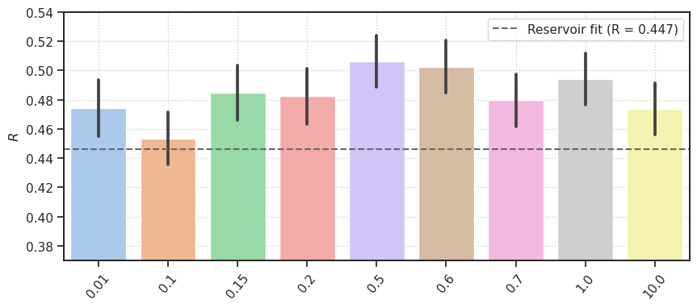
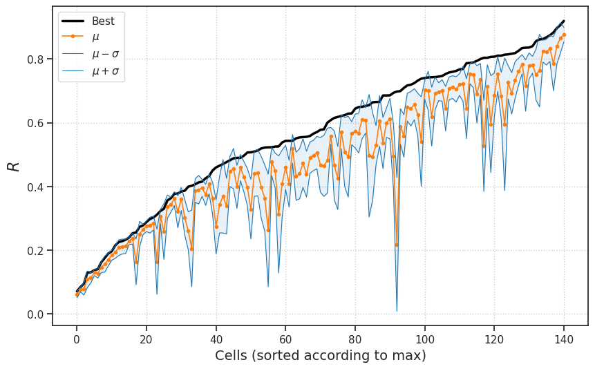
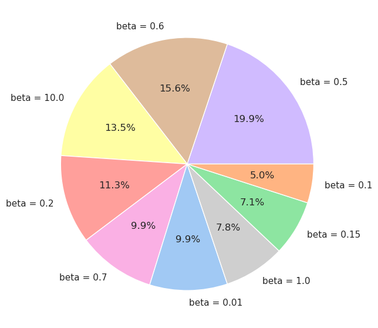
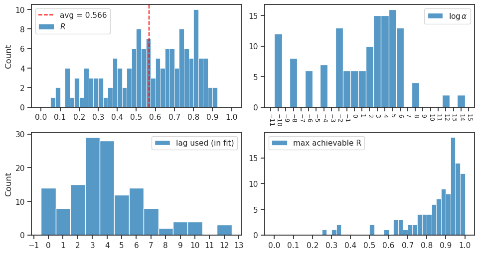
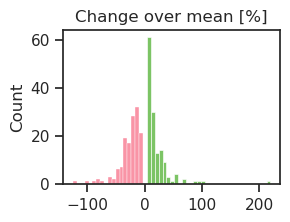
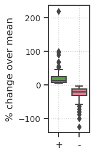
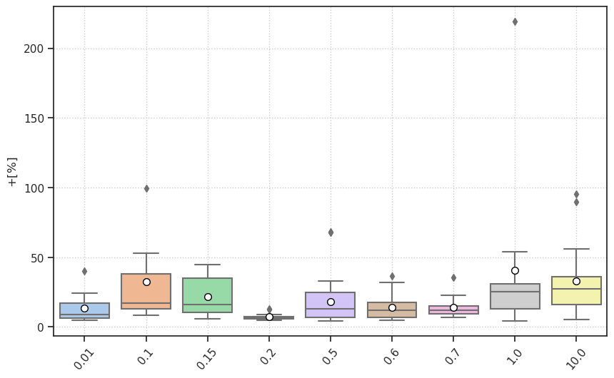

(02) Combine \(\beta\) fits#
Motivation:
Show code cell source
# HIDE CODE
import os, sys
from IPython.display import display
# tmp & extras dir
git_dir = os.path.join(os.environ['HOME'], 'Dropbox/git')
extras_dir = os.path.join(git_dir, 'jb-MTMST/_extras')
fig_base_dir = os.path.join(git_dir, 'jb-MTMST/figs')
tmp_dir = os.path.join(git_dir, 'jb-MTMST/tmp')
# GitHub
sys.path.insert(0, os.path.join(git_dir, '_MTMST'))
from vae.train_vae import TrainerVAE, ConfigTrainVAE
from vae.vae2d import VAE, ConfigVAE
from figures.fighelper import *
from analysis.glm import *
# warnings, tqdm, & style
warnings.filterwarnings('ignore', category=DeprecationWarning)
from rich.jupyter import print
%matplotlib inline
set_style()
Copy fits to tmp dir#
fits = [
'fixate1_nf-420_beta-0.6_(2023_04_30,20:36)',
'fixate1_nf-420_beta-0.7_(2023_04_30,21:40)',
'fixate1_nf-420_beta-1e+01_(2023_04_30,22:48)',
'fixate1_nf-420_beta-1.0_(2023_04_29,19:41)',
'fixate1_nf-420_beta-0.5_(2023_04_30,20:05)',
'fixate1_nf-420_beta-0.2_(2023_04_30,21:37)',
'fixate1_nf-420_(2023_04_27,20:20)',
'fixate1_nf-420_beta-0.1_(2023_04_29,22:01)',
'fixate1_nf-420_beta-0.01_(2023_04_30,07:42)',
]
copy_fits(fits, pjoin(tmp_dir, 'results_combined'))
Load & analyze#
df = []
perf = {}
for fit_name in fits:
_df = f"summary_{fit_name}.df"
_df = pjoin(tmp_dir, 'results_combined', _df)
_df = pd.read_pickle(_df)
k = _df['beta'].unique().item()
perf[k] = _df.perf.values
df.append(_df)
df = pd.concat(df)
print({k: len(v) for k, v in perf.items()})
{0.6: 141, 0.7: 141, 10.0: 141, 1.0: 141, 0.5: 141, 0.2: 141, 0.15: 141, 0.1: 141, 0.01: 141}
grouped_by_cat = collections.defaultdict(list)
grouped_by_nobj = collections.defaultdict(list)
grouped_by_beta = collections.defaultdict(list)
for sim in df['category'].unique():
cat, n = sim[:-1], int(sim[-1])
grouped_by_cat[cat].append(n)
grouped_by_nobj[n].append(cat)
for beta in sorted(df['beta'].unique()):
cat = df.loc[df['beta'] == beta, 'category']
grouped_by_beta[beta].extend(list(cat.unique()))
grouped_by_cat = dict(sorted(grouped_by_cat.items()))
grouped_by_nobj = dict(sorted(grouped_by_nobj.items()))
grouped_by_beta = dict(sorted(grouped_by_beta.items()))
print(grouped_by_cat)
print(grouped_by_nobj)
print(grouped_by_beta)
{'fixate': [1]}
{1: ['fixate']}
{ 0.01: ['fixate1'], 0.1: ['fixate1'], 0.15: ['fixate1'], 0.2: ['fixate1'], 0.5: ['fixate1'], 0.6: ['fixate1'], 0.7: ['fixate1'], 1.0: ['fixate1'], 10.0: ['fixate1'] }
pal = sns.color_palette('pastel', n_colors=len(grouped_by_beta))
pal = {beta: c for beta, c in zip(grouped_by_beta, pal)}
More plots#
Show code cell source
# HIDE CODE
fig, ax = create_figure(1, 1, (10, 4))
sns.barplot(
data=df,
x='beta',
y='perf',
hue='beta',
palette=pal,
errorbar='se',
dodge=False,
ax=ax,
)
ax.get_legend().remove()
ax.set(xlabel='', ylabel=r'$R$', ylim=(0.37, 0.54))
ax.tick_params(axis='x', rotation=50)
ax.grid()
axtwix = ax.twinx()
res_r = 0.447
axtwix.axhline(res_r, color='dimgrey', ls='--', label=f'Reservoir fit (R = {res_r})')
axtwix.set(yticks=[])
axtwix.legend()
plt.show()

Get df best#
df_best = best_fits(df)
inds = df_best['perf_best'].argsort()[::-1]
df_best.iloc[inds[:20]]
| index | category | nf | beta | root | expt | cell | max_perf | log_alpha | best_lag | perf_best | perf_worst | perf_mu | perf_sd | %+ | %- | |
|---|---|---|---|---|---|---|---|---|---|---|---|---|---|---|---|---|
| 124 | 124 | fixate1 | 420 | 0.20 | YUWEI | ytu029 | 4 | 0.935583 | 5.0 | 3 | 0.919395 | 0.845404 | 0.876605 | 0.022994 | 4.881387 | -3.559199 |
| 42 | 42 | fixate1 | 420 | 0.01 | YUWEI | clu209 | 1 | 0.923722 | 0.0 | 3 | 0.906522 | 0.772631 | 0.865783 | 0.047920 | 4.705478 | -10.759243 |
| 29 | 29 | fixate1 | 420 | 0.50 | YUWEI | clu120 | 0 | 0.967720 | 5.0 | 3 | 0.896783 | 0.709577 | 0.840219 | 0.055855 | 6.732087 | -15.548545 |
| 23 | 23 | fixate1 | 420 | 0.20 | YUWEI | clu104 | 0 | 0.980831 | 6.0 | 4 | 0.883021 | 0.629269 | 0.785163 | 0.084816 | 12.463458 | -19.854985 |
| 69 | 69 | fixate1 | 420 | 0.50 | YUWEI | clu267 | 4 | 0.979806 | -2.0 | 4 | 0.874280 | 0.757707 | 0.833232 | 0.040937 | 4.926301 | -9.064154 |
| 28 | 28 | fixate1 | 420 | 0.15 | YUWEI | clu116 | 0 | 0.835483 | 1.0 | 1 | 0.868036 | 0.758685 | 0.821377 | 0.040170 | 5.680575 | -7.632549 |
| 51 | 51 | fixate1 | 420 | 0.01 | YUWEI | clu221 | 3 | 0.900849 | 5.0 | 5 | 0.862644 | 0.760248 | 0.824555 | 0.034596 | 4.619389 | -7.799035 |
| 72 | 72 | fixate1 | 420 | 0.20 | YUWEI | clu267 | 7 | 0.955361 | 0.0 | 4 | 0.861317 | 0.528240 | 0.763733 | 0.113881 | 12.777314 | -30.834379 |
| 67 | 67 | fixate1 | 420 | 0.01 | YUWEI | clu267 | 1 | 0.944895 | -1.0 | 7 | 0.855885 | 0.568380 | 0.750958 | 0.079982 | 13.972328 | -24.312694 |
| 19 | 19 | fixate1 | 420 | 0.50 | YUWEI | clu090 | 0 | 0.990020 | 2.0 | 2 | 0.840114 | 0.745578 | 0.781968 | 0.026332 | 7.435799 | -4.653630 |
| 109 | 109 | fixate1 | 420 | 0.70 | YUWEI | clu295 | 4 | 0.929612 | -6.0 | 3 | 0.835850 | 0.702295 | 0.778107 | 0.040802 | 7.420939 | -9.743199 |
| 75 | 75 | fixate1 | 420 | 0.15 | YUWEI | clu267 | 11 | 0.850368 | -10.0 | 6 | 0.835265 | 0.586084 | 0.716814 | 0.080539 | 16.524747 | -18.237683 |
| 43 | 43 | fixate1 | 420 | 0.01 | YUWEI | clu209 | 4 | 0.933615 | -10.0 | 3 | 0.834257 | 0.743897 | 0.783736 | 0.029772 | 6.446161 | -5.083227 |
| 54 | 54 | fixate1 | 420 | 0.70 | YUWEI | clu222 | 0 | 0.969344 | -10.0 | 2 | 0.825882 | 0.684973 | 0.761082 | 0.041908 | 8.514174 | -10.000066 |
| 49 | 49 | fixate1 | 420 | 10.00 | YUWEI | clu221 | 1 | 0.924544 | 2.0 | 4 | 0.818352 | 0.652063 | 0.734498 | 0.057347 | 11.416544 | -11.223237 |
| 50 | 50 | fixate1 | 420 | 0.01 | YUWEI | clu221 | 2 | 0.921324 | 5.0 | 6 | 0.816377 | 0.601966 | 0.692287 | 0.064914 | 17.924679 | -13.046657 |
| 73 | 73 | fixate1 | 420 | 1.00 | YUWEI | clu267 | 8 | 0.975974 | -10.0 | 5 | 0.814474 | 0.639605 | 0.726722 | 0.052190 | 12.075115 | -11.987581 |
| 118 | 118 | fixate1 | 420 | 0.60 | YUWEI | ytu028 | 8 | 0.328052 | -2.0 | 2 | 0.813506 | 0.214666 | 0.595113 | 0.207813 | 36.697822 | -63.928465 |
| 52 | 52 | fixate1 | 420 | 0.60 | YUWEI | clu221 | 6 | 0.808098 | 0.0 | 5 | 0.810401 | 0.568933 | 0.684720 | 0.073418 | 18.355076 | -16.910109 |
| 70 | 70 | fixate1 | 420 | 0.60 | YUWEI | clu267 | 5 | 0.984911 | -2.0 | 6 | 0.810395 | 0.661246 | 0.752914 | 0.054004 | 7.634425 | -12.175099 |
inds = df_best['%+'].argsort()[::-1]
df_best.iloc[inds[:10]]
| index | category | nf | beta | root | expt | cell | max_perf | log_alpha | best_lag | perf_best | perf_worst | perf_mu | perf_sd | %+ | %- | |
|---|---|---|---|---|---|---|---|---|---|---|---|---|---|---|---|---|
| 34 | 34 | fixate1 | 420 | 1.0 | YUWEI | clu145 | 0 | 0.593791 | -8.0 | 1 | 0.697875 | -0.002190 | 0.218644 | 0.209714 | 219.183185 | -101.001824 |
| 130 | 130 | fixate1 | 420 | 0.1 | YUWEI | ytu029 | 12 | 0.324496 | 0.0 | 6 | 0.522884 | 0.030094 | 0.262122 | 0.176726 | 99.481345 | -88.518920 |
| 31 | 31 | fixate1 | 420 | 10.0 | YUWEI | clu131 | 0 | 0.843686 | -4.0 | 9 | 0.402113 | 0.074209 | 0.205623 | 0.120442 | 95.558242 | -63.910044 |
| 66 | 66 | fixate1 | 420 | 10.0 | YUWEI | clu229 | 11 | 0.716168 | 5.0 | 10 | 0.311350 | 0.030648 | 0.164001 | 0.102328 | 89.846867 | -81.312145 |
| 84 | 84 | fixate1 | 420 | 0.5 | YUWEI | clu292 | 13 | 0.871889 | 6.0 | 12 | 0.525686 | -0.077970 | 0.312420 | 0.183654 | 68.262647 | -124.956722 |
| 87 | 87 | fixate1 | 420 | 0.5 | YUWEI | clu293 | 3 | 0.828781 | 12.0 | 12 | 0.459803 | 0.153428 | 0.273760 | 0.085113 | 67.958709 | -43.955245 |
| 68 | 68 | fixate1 | 420 | 10.0 | YUWEI | clu267 | 3 | 0.943782 | 1.0 | 3 | 0.255560 | 0.069158 | 0.163659 | 0.071827 | 56.154446 | -57.742338 |
| 94 | 94 | fixate1 | 420 | 1.0 | YUWEI | clu293 | 10 | 0.956023 | -2.0 | 3 | 0.507137 | 0.175525 | 0.329072 | 0.093440 | 54.111122 | -46.660751 |
| 63 | 63 | fixate1 | 420 | 0.1 | YUWEI | clu227 | 0 | 0.857890 | 3.0 | 4 | 0.399256 | 0.180960 | 0.261352 | 0.059357 | 52.765561 | -30.760074 |
| 127 | 127 | fixate1 | 420 | 10.0 | YUWEI | ytu029 | 7 | 0.502646 | -2.0 | 10 | 0.803684 | 0.310600 | 0.527486 | 0.143109 | 52.361170 | -41.116867 |
sorted_data = sorted(zip(
df_best['perf_best'],
df_best['perf_mu'],
df_best['perf_sd'],
), key=lambda x: x[0])
sorted_data = list(map(
lambda t: np.array(t),
zip(*sorted_data),
))
Show code cell source
# HIDE CODE
fig, ax = create_figure(1, 1, (10, 6))
ax.plot(sorted_data[0], lw=2.5, color='k', label='Best')
ax.plot(sorted_data[1], lw=1.2, color='C1', marker='.', label=r'$\mu$')
lower = sorted_data[1] - sorted_data[2]
higher = sorted_data[1] + sorted_data[2]
ax.plot(lower, lw=0.8, color='C0', label=r'$\mu - \sigma$')
ax.plot(higher, lw=0.8, color='C0', label=r'$\mu + \sigma$')
ax.fill_between(
x=range(len(df_best)),
y1=lower,
y2=higher,
color='C0',
alpha=0.1,
)
ax.set_xlabel('Cells (sorted according to max)', fontsize=14)
ax.set_ylabel(r'$R$', fontsize=16)
ax.locator_params(axis='y', nbins=10)
ax.legend()
ax.grid()
plt.show()

Pie chart#
labels, vals = zip(*collections.Counter(
df_best['beta']).most_common())
vals = [100 * e / sum(vals) for e in vals]
fig, ax = create_figure(1, 1, (8, 7))
ax.pie(
x=vals,
labels=[f"beta = {e}" for e in labels],
colors=[pal[e] for e in labels],
autopct='%0.1f%%',
)
plt.show()

Summary of results#
show_neural_results(df_best, 'perf_best');

_pal = sns.color_palette('husl')
_pal = {'+': _pal[2], '-': _pal[0]}
fig, ax = create_figure(1, 1, (2.8, 2))
sns.histplot(df_best['%+'], color=_pal['+'], ax=ax)
sns.histplot(df_best['%-'], color=_pal['-'], ax=ax)
ax.set(xlabel='', title='Change over mean [%]')
plt.show()

val = np.concatenate([df_best['%+'].values, df_best['%-'].values])
label = ['+'] * len(df_best['%+']) + ['-'] * len(df_best['%-'])
fig, ax = create_figure(1, 1, (0.9, 2.8))
sns.boxplot(
data=pd.DataFrame({'val': val, 'label': label}),
y='val',
x='label',
palette=_pal,
width=0.70,
ax=ax,
)
ax.tick_params(axis='y', labelsize=10)
ax.set(xlabel='', ylabel='% change over mean')
ax.grid()
plt.show()

Show code cell source
# HIDE CODE
props_mean = {
'marker': 'o',
'markerfacecolor': 'white',
'markeredgecolor': 'k',
'markersize': 7,
'alpha': 1.0,
}
fig, ax = create_figure(1, 1, (10, 6))
sns.boxplot(
data=df_best,
y='%+',
x='beta',
hue='beta',
order=pal,
palette=pal,
dodge=False,
showmeans=True,
meanprops=props_mean,
ax=ax,
)
ax.set(xlabel='', ylabel=r'$+ [\%]$')
ax.tick_params(axis='x', rotation=50)
ax.get_legend().remove()
ax.grid()
plt.show()

categories = list(df['category'].unique())
df_test = best_fits(df, categories)
perf_best = df_test['perf_best'].mean()
perf_best
0.5656327766724834
reduced_perf_objs = {}
for n_obj in grouped_by_nobj:
_df = best_fits(df, [e for e in categories if int(e[-1]) == n_obj])
reduced_perf_objs[n_obj] = _df['perf_best'].mean()
print(reduced_perf_objs)
{1: 0.5656327766724834}
reduced_perf = {}
for cat in grouped_by_cat:
_df = best_fits(df, [e for e in categories if cat not in e])
reduced_perf[cat] = _df['perf_best'].mean()
print(reduced_perf)
fig, axes = create_figure(1, 2, (4.5, 2), sharey='all', layout='constrained')
axes[0].plot(list(reduced_perf.values()), marker='o')
axes[0].set(xticks=range(len(reduced_perf)), xticklabels=list(reduced_perf), ylabel=r'$R$')
axes[0].tick_params(axis='x', rotation=50)
axes[0].grid()
axes[1].plot(list(reduced_perf_objs.values()), marker='o')
axes[1].set(xticks=range(len(reduced_perf_objs)), xticklabels=list(reduced_perf_objs), xlabel='# Objs')
axes[1].tick_params(axis='x', rotation=0)
axes[1].grid()
plt.show()
Permutation test#
%%time
def statistic(a, b):
return np.mean(a - b)
t = PrettyTable()
t.field_names = [
'Beta #1',
'Beta #2',
'Statistic',
'p-val',
'Significant?',
]
pvals = {}
looper = itertools.combinations(
list(df['beta'].unique()), 2)
for b1, b2 in looper:
_data = (
df.loc[df['beta'] == b1, 'perf'].values,
df.loc[df['beta'] == b2, 'perf'].values,
)
test = sp_stats.permutation_test(
data=_data,
n_resamples=int(1e5),
permutation_type='samples',
alternative='two-sided',
statistic=statistic,
random_state=0,
)
pvals[(b1, b2)] = test.pvalue
t.add_row([
b1,
b2,
np.round(test.statistic, 2),
f"{test.pvalue:0.2g}",
test.pvalue < 0.05,
])
CPU times: user 20min 54s, sys: 57.8 s, total: 21min 51s
Wall time: 21min 52s
print(t)
+---------+---------+-----------+---------+--------------+ | Beta #1 | Beta #2 | Statistic | p-val | Significant? | +---------+---------+-----------+---------+--------------+ | 0.6 | 0.7 | 0.02 | 0.00028 | True | | 0.6 | 10.0 | 0.03 | 0.00058 | True | | 0.6 | 1.0 | 0.01 | 0.26 | False | | 0.6 | 0.5 | -0.0 | 0.51 | False | | 0.6 | 0.2 | 0.02 | 0.0034 | True | | 0.6 | 0.15 | 0.02 | 0.016 | True | | 0.6 | 0.1 | 0.05 | 2e-05 | True | | 0.6 | 0.01 | 0.03 | 0.00026 | True | | 0.7 | 10.0 | 0.01 | 0.54 | False | | 0.7 | 1.0 | -0.01 | 0.1 | False | | 0.7 | 0.5 | -0.03 | 0.00016 | True | | 0.7 | 0.2 | -0.0 | 0.72 | False | | 0.7 | 0.15 | -0.0 | 0.51 | False | | 0.7 | 0.1 | 0.03 | 0.0013 | True | | 0.7 | 0.01 | 0.01 | 0.52 | False | | 10.0 | 1.0 | -0.02 | 0.0095 | True | | 10.0 | 0.5 | -0.03 | 0.0003 | True | | 10.0 | 0.2 | -0.01 | 0.4 | False | | 10.0 | 0.15 | -0.01 | 0.31 | False | | 10.0 | 0.1 | 0.02 | 0.083 | False | | 10.0 | 0.01 | -0.0 | 0.98 | False | | 1.0 | 0.5 | -0.01 | 0.16 | False | | 1.0 | 0.2 | 0.01 | 0.25 | False | | 1.0 | 0.15 | 0.01 | 0.33 | False | | 1.0 | 0.1 | 0.04 | 2e-05 | True | | 1.0 | 0.01 | 0.02 | 0.048 | True | | 0.5 | 0.2 | 0.02 | 0.001 | True | | 0.5 | 0.15 | 0.02 | 0.0048 | True | | 0.5 | 0.1 | 0.05 | 2e-05 | True | | 0.5 | 0.01 | 0.03 | 0.00042 | True | | 0.2 | 0.15 | -0.0 | 0.73 | False | | 0.2 | 0.1 | 0.03 | 0.00072 | True | | 0.2 | 0.01 | 0.01 | 0.32 | False | | 0.15 | 0.1 | 0.03 | 0.00052 | True | | 0.15 | 0.01 | 0.01 | 0.19 | False | | 0.1 | 0.01 | -0.02 | 0.015 | True | +---------+---------+-----------+---------+--------------+
print(pvals)
{ (0.6, 0.7): 0.00027999720002799973, (0.6, 10.0): 0.0005799942000579994, (0.6, 1.0): 0.2627573724262757, (0.6, 0.5): 0.5076949230507695, (0.6, 0.2): 0.0033999660003399966, (0.6, 0.15): 0.016179838201617985, (0.6, 0.1): 1.999980000199998e-05, (0.6, 0.01): 0.0002599974000259997, (0.7, 10.0): 0.5447345526544735, (0.7, 1.0): 0.10427895721042789, (0.7, 0.5): 0.00015999840001599985, (0.7, 0.2): 0.7220727792722073, (0.7, 0.15): 0.5079749202507975, (0.7, 0.1): 0.0013199868001319986, (0.7, 0.01): 0.5245747542524575, (10.0, 1.0): 0.009479905200947991, (10.0, 0.5): 0.0002999970000299997, (10.0, 0.2): 0.4018159818401816, (10.0, 0.15): 0.3089369106308937, (10.0, 0.1): 0.08323916760832392, (10.0, 0.01): 0.977910220897791, (1.0, 0.5): 0.16037839621603783, (1.0, 0.2): 0.24831751682483175, (1.0, 0.15): 0.33085669143308566, (1.0, 0.1): 1.999980000199998e-05, (1.0, 0.01): 0.047759522404775955, (0.5, 0.2): 0.000999990000099999, (0.5, 0.15): 0.004759952400475995, (0.5, 0.1): 1.999980000199998e-05, (0.5, 0.01): 0.0004199958000419996, (0.2, 0.15): 0.7339526604733952, (0.2, 0.1): 0.0007199928000719992, (0.2, 0.01): 0.31715682843171566, (0.15, 0.1): 0.0005199948000519994, (0.15, 0.01): 0.18721812781872182, (0.1, 0.01): 0.015459845401545984 }